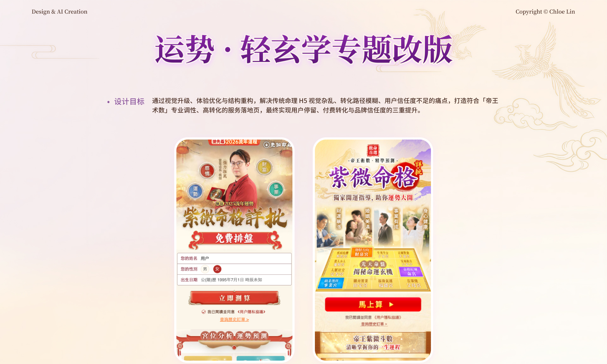
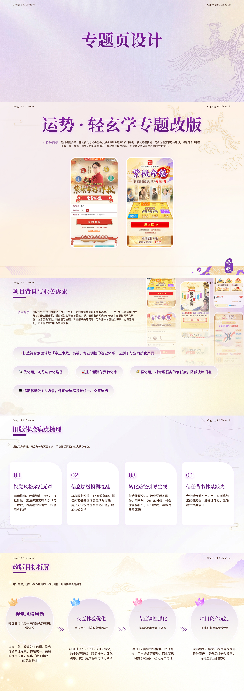
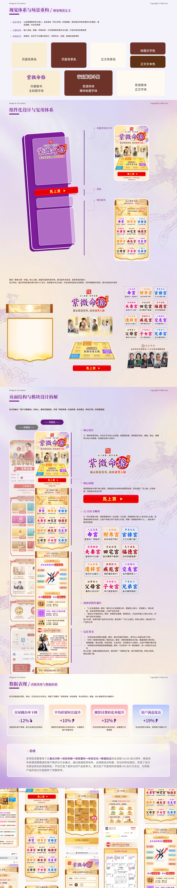

运势专题改版
通过视觉升级、体验优化与结构重构，解决命理 H5 视觉杂乱、转化路径模糊与用户信任感不足的问题。

PROJECT OVERVIEW
从视觉升级到转化路径重构。
改版以信息秩序和用户理解为起点，统一视觉表现并梳理内容节奏，让关键价值与行动入口在长页面中更清晰。
FULL PAGE DESIGN
专题页面全览


通过视觉升级、体验优化与结构重构，解决命理 H5 视觉杂乱、转化路径模糊与用户信任感不足的问题。

PROJECT OVERVIEW
改版以信息秩序和用户理解为起点，统一视觉表现并梳理内容节奏，让关键价值与行动入口在长页面中更清晰。
FULL PAGE DESIGN

